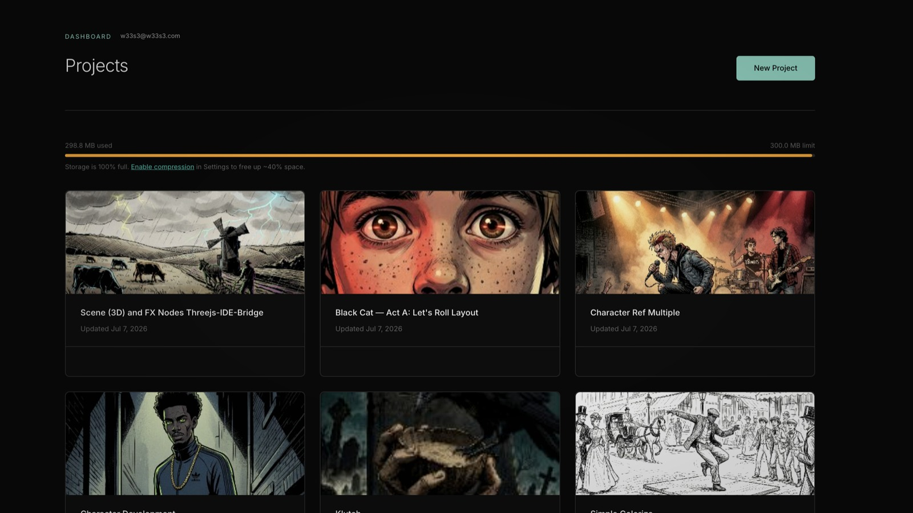

FlowBoard Gathers Its Tools into Subscriber Resources
FlowBoard's dashboard now acts more like a product hub, collecting the desktop app, installable skills, the ThreeJS IDE, and the Blender Bridge add-on in one subscriber-facing resources area.

One clear product shift in recent FlowBoard work is that the dashboard is no longer treated as only the place where subscription state and credits live. The committed changes in client/src/pages/DashboardPage.tsx turn it into a delivery surface for the tools that make the editor more useful in practice: the desktop app, installable skills, the ThreeJS IDE, and the Blender Bridge add-on.
From account page to tool hub
The important part is not just that more links were added. The resource list is structured as a real manifest, with names, descriptions, sizes, and per-item delivery behavior. Downloads from the private resources bucket stay entitlement-gated, while items that need a different path can still live in the same section. That is a cleaner product model than scattering companion tools across one-off buttons and external notes.
In the current committed state, a subscriber can reach the macOS desktop app, FlowBoard Skills, the hosted ThreeJS IDE, and the Blender Bridge add-on from one place. Each item explains what it is for, which matters because these are not generic bonuses. They are parts of the same working system around scene staging, automation, and local-first use.
Different delivery paths, one interface
The implementation is also more mature than a static list of files. The desktop app stays on its own download path through the download-desktop edge function, while storage-backed resources are fetched from the resources bucket. External tools such as ThreeJS-IDE render as an open link instead of pretending everything is the same kind of artifact.
That separation is easy to miss, but it is what keeps the interface honest. A downloadable app, a zipped add-on, and a hosted scene tool do not need to be forced through the same backend to feel coherent to the user. FlowBoard now exposes them through one product surface while still respecting how each one is actually delivered.
Why the Blender add-on matters here
The Blender Bridge add-on is especially telling in this context. Earlier work made Blender a real backend for Scene capture and compositor FX. Listing the hardened add-on in Subscriber Resources turns that capability into something a user can actually install without digging through the repo. The dashboard copy even includes the install-from-disk path and points people back to choosing the Blender backend on Scene or FX nodes.
That is a useful pattern for FlowBoard in general: product features should not stop at code support. When a capability depends on companion tooling, the product needs a stable way to hand that tooling to the user. This resource area is starting to do that work.
A better shape for the broader FlowBoard stack
What makes this worth covering is that it changes how the product reads as a whole. FlowBoard is no longer just the graph editor plus a checkout flow. The committed dashboard work presents it as a small connected stack: local app, agent-facing skills, browser-based staging tools, and DCC bridges that all support the same node-based workflow.
That is a better foundation for future product communication because it gives the surrounding ecosystem a durable home inside the app experience itself. Instead of treating companion tools as scattered side projects, FlowBoard is starting to package them as part of the product.